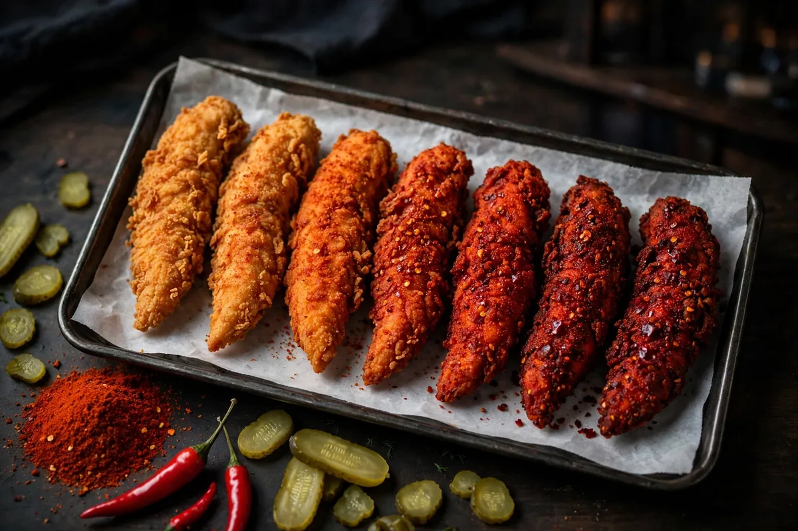

Dave's Hot Chicken Spice Levels: All 7 Heats, Mild to Reaper
Dave's Hot Chicken spice levels are the seven heats every tender, slider and bite is seasoned to order in, from Not Hot at the bottom to the Reaper at the top. Picking the right one matters more than any other choice on the menu, because the gap between Mild and Reaper is enormous. This guide lays out the full Dave's Hot Chicken spice levels chart, explains what each heat actually feels like, untangles the Scoville numbers fan sites argue about, and covers the Reaper waiver, so you can order with confidence.

7 heat levelsReaper: waiver firstDave's Hot Chicken Spice Level Chart
The seven Dave's Hot Chicken spice levels, from mildest to hottest, are Not Hot, Lite Mild, Mild, Medium, Hot, Extra Hot, and Reaper. The same ladder is often written as the spice levels 1 to 7, and this ranking is the same whichever way you read it: one gentle start, a long middle, and a very serious top end.
| Level | Heat | Scoville (SHU) est. | What to expect | Best for |
|---|---|---|---|---|
| Not Hot | None | 0 | Crunchy, seasoned chicken with no burn at all | Kids and no-heat eaters |
| Lite Mild | Very low | 500–1,000 | A warm tingle that fades in seconds | Cautious first-timers |
| Mild | Low | 1,000–2,500 | Gentle heat you can taste in every bite | Light heat fans |
| Medium | Moderate | 2,500–5,000 | A real kick that builds as you eat | Most people, most orders |
| Hot | High | 5,000–10,000 | A proper burn that sits on the tongue | Confident heat eaters |
| Extra Hot | Very high | 10,000–50,000 | An intense, lingering burn, drink within reach | Experienced heat seekers |
| Reaper | Extreme | 80,000–100,000+ | The Carolina Reaper blend, in a class of its own | Challenge eaters only |
Two honesty notes about this Dave's Hot Chicken spice levels chart. First, the naming: Dave's own pages call the lowest level Not Hot, while most fan sites and some menus call it No Spice. It is the same level, so order either name with confidence. Second, the Scoville column: Dave's does not publish official Scoville ratings for any level, so the SHU figures here are the widely referenced estimates for each blend, worked out from the peppers in the rub. Read them as a guide to the gaps between levels, not as lab measurements. The Reaper figure is the blend's estimate; the raw Carolina Reaper pepper itself rates far higher, and where those big numbers come from is explained in the Reaper section below.
What Each Level Feels Like
Heat at Dave's is a dry spice rub tossed onto the chicken after frying, not a sauce cooked into it, so the burn builds bite by bite instead of hitting all at once. Here is each of the Dave's Hot Chicken spice levels in the order your taste buds will meet them, with how spicy each one really is.
1. Not Hot (No Spice)
No burn at all: just crunchy, well-seasoned fried chicken. This is the order for kids and for anyone who wants Dave's without the challenge, and it is a full-flavor choice, not a compromise. If you want extra tang, Dave's Sauce on the side adds it without adding heat.
2. Lite Mild
The gentlest warm-up on the ladder. You get a faint tingle on the lips that is gone in seconds, enough to taste the rub working without changing what the chicken tastes like. Pick it when Not Hot sounds too plain but real heat sounds like a risk.
3. Mild
Real but friendly heat, a steady warmth through every bite that never takes over. Mild suits a slider well, because the slaw and pickles cool each mouthful and keep the balance pleasant from start to finish.
4. Medium
The level most regulars land on, and the most popular of the Dave's Hot Chicken spice levels for good reason. The kick arrives a few bites in and keeps building, but you always taste the chicken first and the heat second. If a friend asks where to start, this is the answer.
5. Hot
A clear step up: the burn sits on the tongue and stays there between bites. Hot is where casual eaters start slowing down and reaching for their drink. Order a shake or a slaw-heavy build if you go here, and pace yourself.
6. Extra Hot
Serious, lingering heat that most people feel for the rest of the meal. Extra Hot is not the level to discover your limit on. Work up to it across visits, because the jump from Hot is bigger than the jump from Medium to Hot.
7. Reaper
A different category altogether. The Reaper blend is built on Carolina Reaper peppers, and the heat keeps climbing for minutes after you stop eating. It comes with a waiver at most locations and a section of its own below, because it deserves one.
Read together, the Dave's Hot Chicken spice levels form a ladder with no big jumps until the last two rungs. That is deliberate: most people find their level within two visits and stay there for years.
Which Spice Level Should You Choose?
If it is your first visit, choose Medium. It is the most ordered of the Dave's Hot Chicken spice levels because it brings real heat without hiding the chicken, and you can always move up one rung on the next visit.
The fastest shortcut is the hot sauce already in your fridge. The Dave's Hot Chicken spice level scale tracks familiar sauces closely enough to use as a map:
| Sauce you already eat | Closest Dave's level |
|---|---|
| Frank's RedHot | Mild |
| Sriracha | Medium |
| Tabasco | Hot |
| Habanero hot sauces | Extra Hot |
| Ghost pepper sauces | Reaper |
Start at Medium on one item and Mild on the other. A tender and a slider at two different heats, like the pair in our combos guide, teaches you more than one brave order.
Not Hot tenders with Dave's Sauce or ranch for dipping are a complete order, not a fallback. Nobody at the table misses the burn.
Earn it in steps: Hot on one visit, Extra Hot twice after that. If Extra Hot still feels controlled, you are ready to sign the waiver.
The Reaper: How Hot Is It, Really?
The Dave's Hot Chicken Reaper is the hottest item on the menu, seasoned with a Carolina Reaper pepper blend, and most locations ask you to sign a waiver before they serve it. It is the level the whole Dave's Hot Chicken spice levels ladder builds toward.
How hot is the Dave's Hot Chicken Reaper in Scoville terms? Nobody can tell you exactly, because Dave's publishes no Scoville rating for it. The Carolina Reaper pepper itself is rated at roughly 1.6 to 2 million Scoville units, but that is the raw pepper's number, not the seasoning blend on your chicken. Fan sites and Reddit threads quote the blend anywhere from about 80,000 units to over a million, and a range that wide is a confession: those figures are estimates, not measurements. What is certain is the gap. The Reaper sits far above Extra Hot, and everyone who eats both feels it immediately.
The waiver is real. At most locations you sign a short liability waiver before a Reaper order is cooked, confirming that you understand what you are eating and that the choice is yours. It is part warning, part rite of passage. Whether a younger eater can order it is handled store by store, so ask at your location before promising anyone a Reaper run.
Expect a slow build: the first bite tastes almost manageable, then the heat climbs for several minutes and lingers long after the food is gone. Order your milkshake with the Reaper, not after it, and read the cool-down section below before your first bite.
Which Menu Items Come in Which Spice Levels?
Dave's Hot Chicken spice levels apply per item, not per order, so a tender in the same box can be Hot while the slider next to it is Mild.
| Menu item | Spice levels available |
|---|---|
| Chicken tenders | All 7 levels |
| Chicken sliders | All 7 levels |
| Dave's Bites (10 pc) | All 7 levels |
| Cauliflower (Dave's NOT Chicken) | All 7 levels |
| Mini Sliders | A short list on most menus: Not Hot, Medium, Hot |
| Hot Box Roulette | Fixed mix, no choosing |
| Saucy Bites | Sauces instead of the dry levels |
| Sides, shakes and drinks | No spice level |
Mixing levels in one order costs nothing extra: the heat you pick never changes the price of the item. That makes split orders the smartest way to explore the Dave's Hot Chicken spice level menu, one meal at a time.
Does Spice Level Change Calories or Price?
Price, no. Calories, a little. The level itself is always free to choose, but Dave's own nutrition chart groups Dave's Hot Chicken spice levels into two calorie tiers.
The chart puts Not Hot and Lite Mild in the lower tier and Mild through Reaper in the upper one, because the hotter rubs carry a little more seasoning on the chicken. The gap runs from about 30 to 120 calories depending on the item, and it is widest on sliders and loaded items. Our nutrition guide breaks down the full chart item by item, so you can see exactly what your level adds.
How to Cool Down the Heat
Dairy beats water, every time. The capsaicin in the rub is oil-based, so the fastest relief at the table is a milkshake or anything with real dairy in it, whichever of the Dave's Hot Chicken spice levels caught you.
Milk's casein protein washes capsaicin off your tongue the way soap lifts grease. A Dave's shake is the strongest cool-down on the menu.
Cold, acidic bites reset your palate between hot ones. They are already in your slider, so use them on purpose.
Water spreads capsaicin around your mouth instead of removing it. If you already drank some, follow it with fries or bread to soak the oils up.
Why the Same Level Can Taste Hotter or Milder
Because every piece is seasoned by hand. The rub is tossed onto your chicken when you order it, so one cook's generous shake can push a Medium toward Hot territory.
Tenders also tend to feel hotter than sliders at the same level: a tender is all seasoned surface, while a slider's bun, slaw and pickles dilute every bite. Eating speed matters too, because the heat keeps building for minutes after each bite lands. Treat the Dave's Hot Chicken spice levels as a guide rather than a lab measurement, and if a level felt different from last time, it was the format and the hand, not your imagination. Whenever you visit, the hours guide will tell you how late your store keeps the fryers on.
Frequently Asked Questions
What are the seven Dave's Hot Chicken spice levels?
From mildest to hottest: Not Hot (also called No Spice), Lite Mild, Mild, Medium, Hot, Extra Hot, and Reaper. Every chicken item on the menu is seasoned to order at the level you pick, and you can mix levels inside one order.
What is the hottest spice level at Dave's Hot Chicken?
The Reaper. It is seasoned with a Carolina Reaper pepper blend, sits far above Extra Hot, and most locations ask you to sign a waiver before they serve it.
How hot is the Dave's Hot Chicken Reaper?
Dave's publishes no official Scoville rating for it. The Carolina Reaper pepper itself rates around 1.6 to 2 million Scoville units, but the blend on the chicken is weaker than the raw pepper, and fan estimates for it vary too widely to trust. Expect the strongest, longest burn on the menu.
What are the Scoville units (SHU) for Dave's Hot Chicken spice levels?
Estimated, because Dave's publishes no official Scoville ratings: Not Hot 0, Lite Mild 500–1,000, Mild 1,000–2,500, Medium 2,500–5,000, Hot 5,000–10,000, Extra Hot 10,000–50,000, and Reaper 80,000–100,000+ SHU for the seasoning blend. The Carolina Reaper pepper itself rates around 1.6 to 2 million SHU, which is why fan sites quote much bigger numbers for the raw pepper than for the blend on the chicken.
Do you have to sign a waiver for the Reaper?
At most locations, yes. You sign a short liability waiver before a Reaper order is cooked, confirming you know what you are eating. Stores run the details themselves, so the exact routine can vary a little by location.
What is the best spice level for a first visit?
Medium. It is the most popular starting point because the heat is real but the chicken still leads. If you are unsure, order one item at Medium and one at Mild and compare them in the same meal.
Does the spice level change the calories?
A little. Dave's Hot Chicken spice levels do not change the price, but the official nutrition chart prints two calorie tiers: Not Hot and Lite Mild in the lower tier, Mild to Reaper in the upper one, a gap of about 30 to 120 calories depending on the item.
More Dave's Guides
Browse the rest of the Dave's guides.